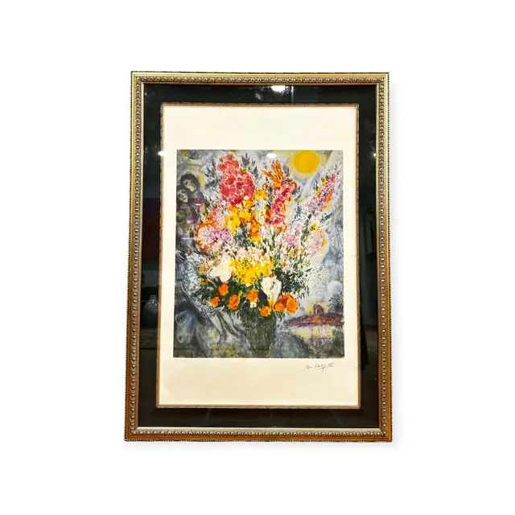
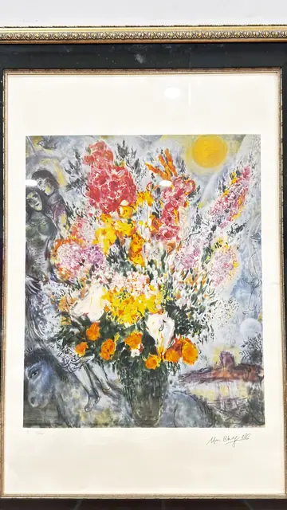
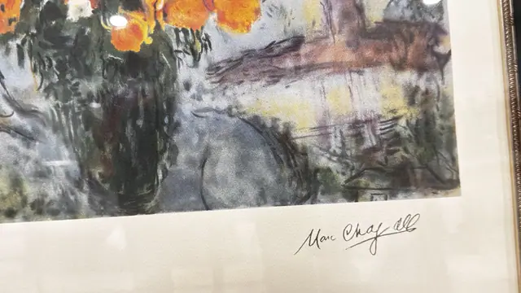
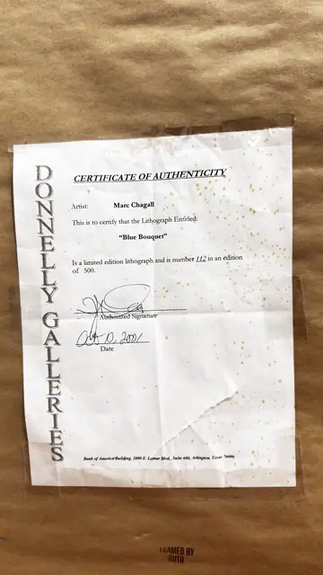

Paintings & Prints
Marc Chagall Blue Bouquet Lithograph, Signed in the Plate, Framed, 2001
Marc Chagall · certified 2001
Price Upon Request




About the Item
Marc Chagall. A dense bouquet of pink, scarlet, orange and lemon blossom erupts from a dark green vase against a smoky grey-blue ground, with a yellow sun burning at the upper right and a pair of embracing lovers dissolved into the flowers at the left. Below the vase a strip of village rooftops and a bird are drawn in washy blues and reds. The lithograph has wide white margins and sits on a cream mat within a black velvet-effect liner and a heavily beaded gilt frame. Medium: colour lithograph on paper. Signed lower right margin, reading "Marc Chagall". Edition: number 112 in an edition of 500. Accompanied by a certificate: Certificate of Authenticity from Donnelly Galleries, Bank of America Building, 2000 E. Lamar Blvd, Suite 600, Arlington, Texas 76006, certifying that the lithograph entitled 'Blue Bouquet' by Marc Chagall is a limited edition lithograph and is number 112 in an edition of 500; dated Oct 10, 2001. Inscribed on the reverse or mount: Marc Chagall (signed lower right margin). Condition: The backing paper carries a 'FRAMED BY RUTH' stamp. Heavy glass glare in the photographs; no foxing, tears or fading visible on the sheet.
About the Artist
Marc Chagall (1887-1985) was a Russian-French modernist celebrated for dreamlike scenes of lovers, villages and bouquets in saturated colour. His work spans painting, stained glass and a vast printmaking output, and hangs in major museums worldwide.
Details
- Creator:
- Marc Chagall
- Creation Year:
- certified 2001
- Dimensions:
- Height: 42.3 in (107.44 cm)
Width: 29.9 in (75.95 cm)
outside of frame - Medium:
- colour lithograph on paper
- Edition:
- number 112 in an edition of 500
- Period:
- 21St
- Condition:
- Offered in the condition shown in the photographs.
- Reference Number:
- VO-265
- Documentation:
- Certificate of Authenticity from Donnelly Galleries, Bank of America Building, 2000 E. Lamar Blvd, Suite 600, Arlington, Texas 76006, certifying that the lithograph entitled 'Blue Bouquet' by Marc Chagall is a limited edition lithograph and is number 112 in an edition of 500; dated Oct 10, 2001.
- Gallery Location:
- Donnelly Galleries